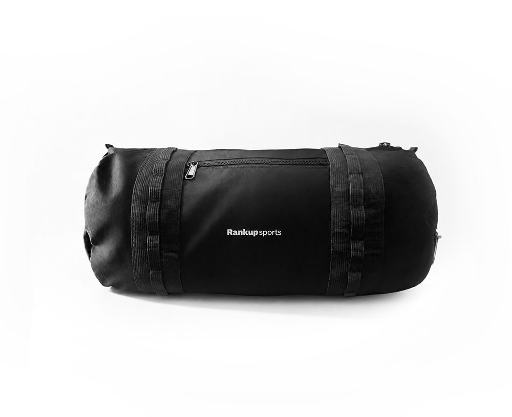
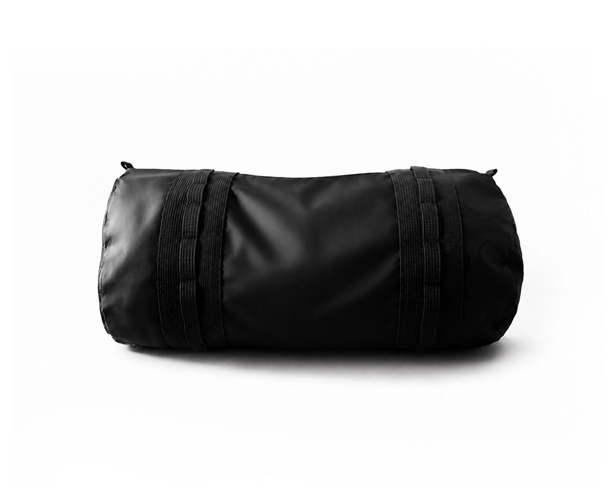
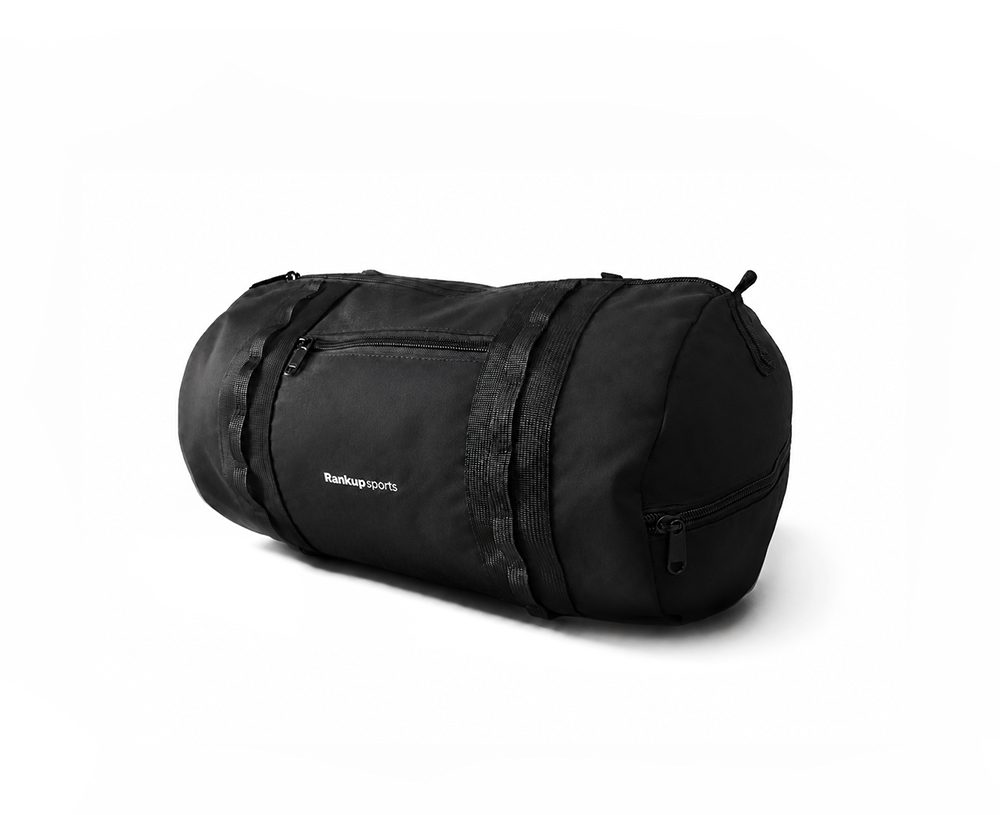
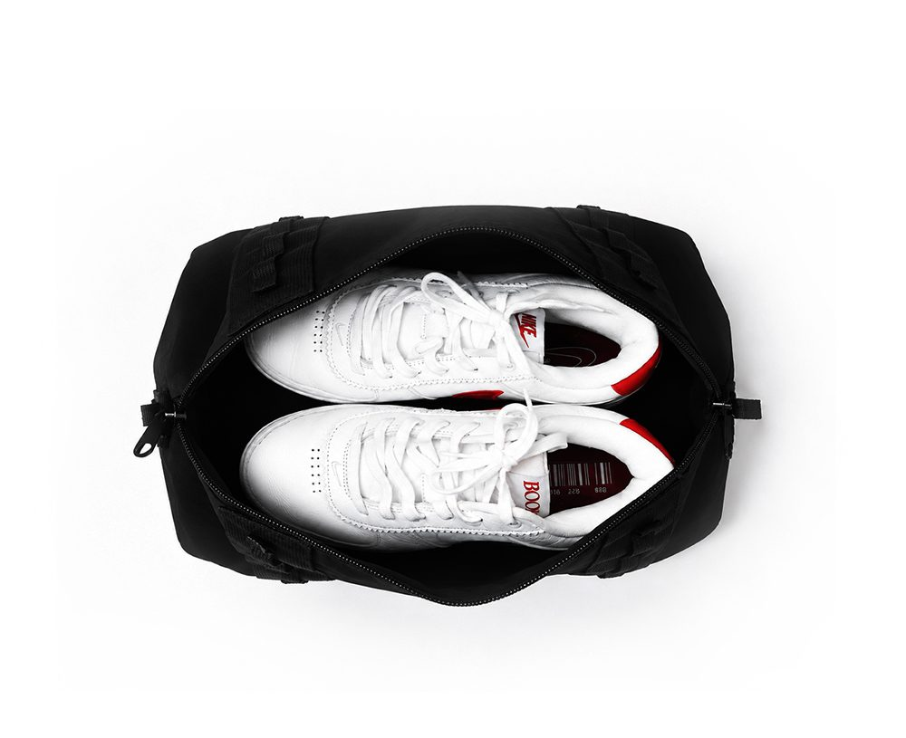

ONLINE SHOP
Select your favorite color too!


DRAWSTRING BALL BAG
￥5,499




SHOES BARREL BAG
￥5,499


ROPE STRAP - Black
￥1,299


ROPE STRAP - Silver
￥1,299


ROPE STRAP - Pink
￥1,299


ROPE STRAP - LightBlue
￥1,299